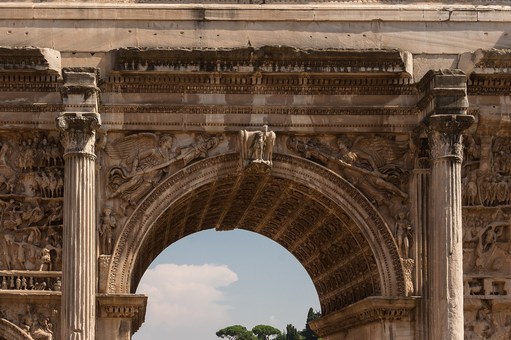
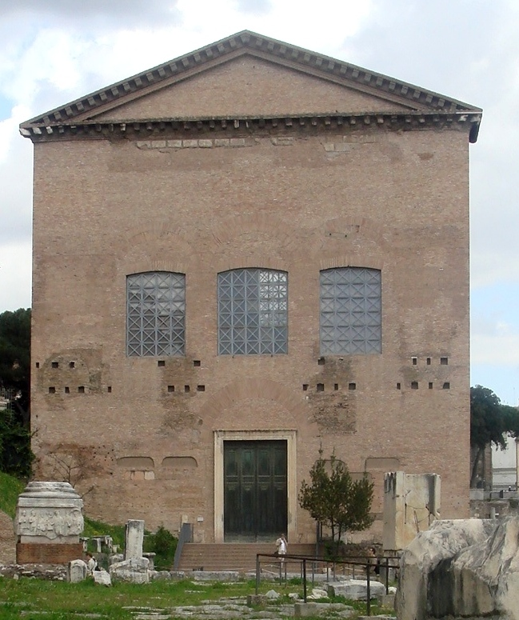
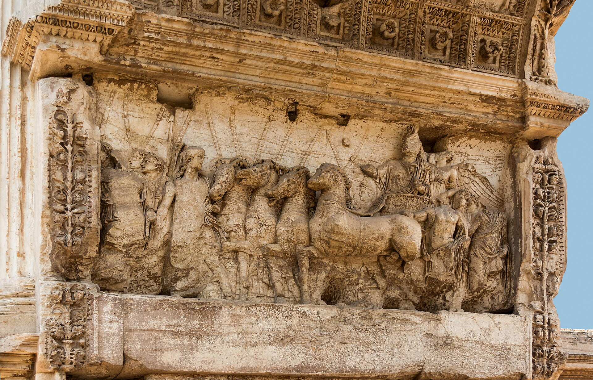
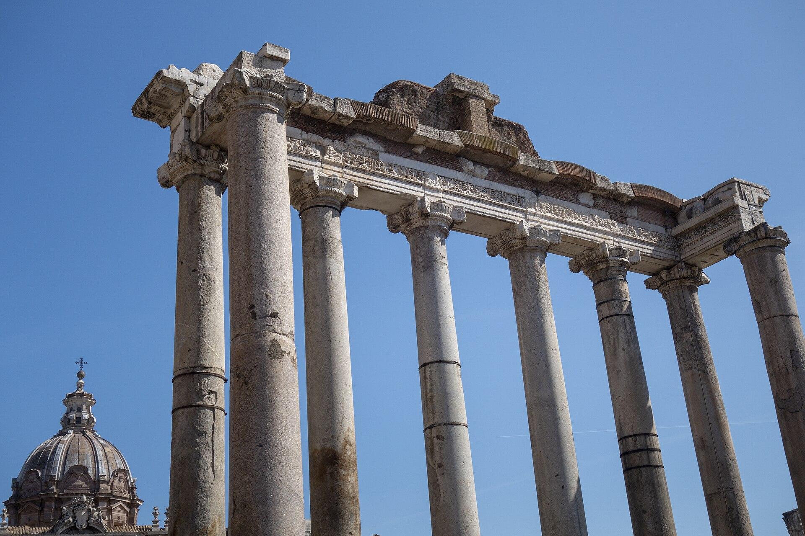
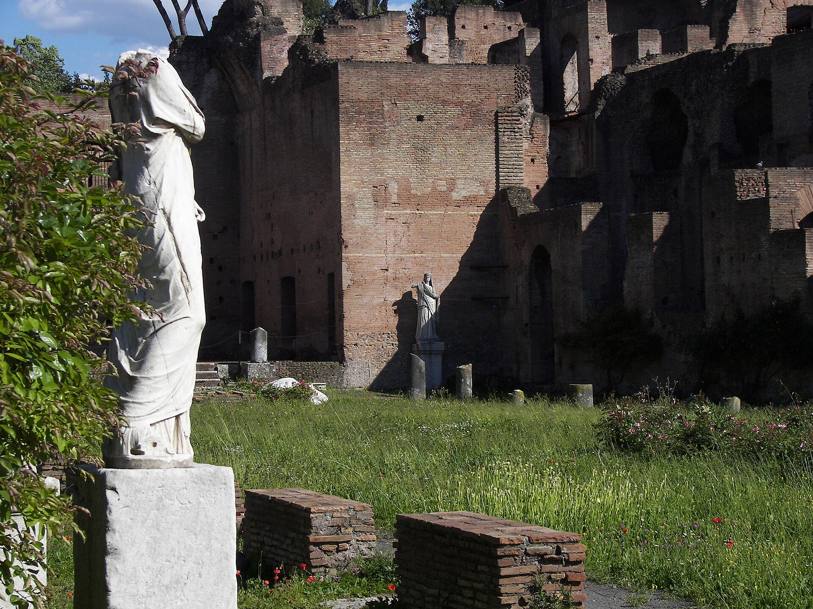
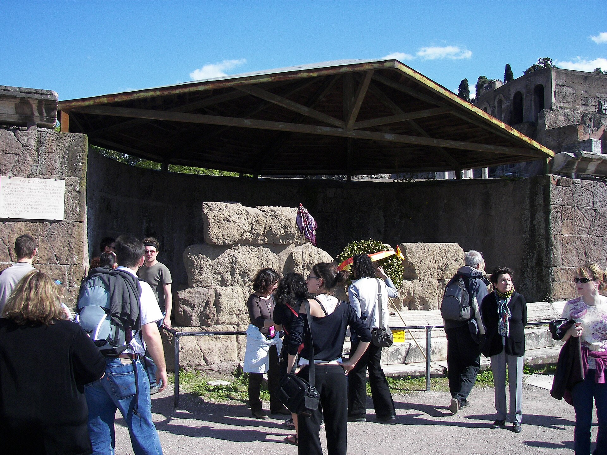
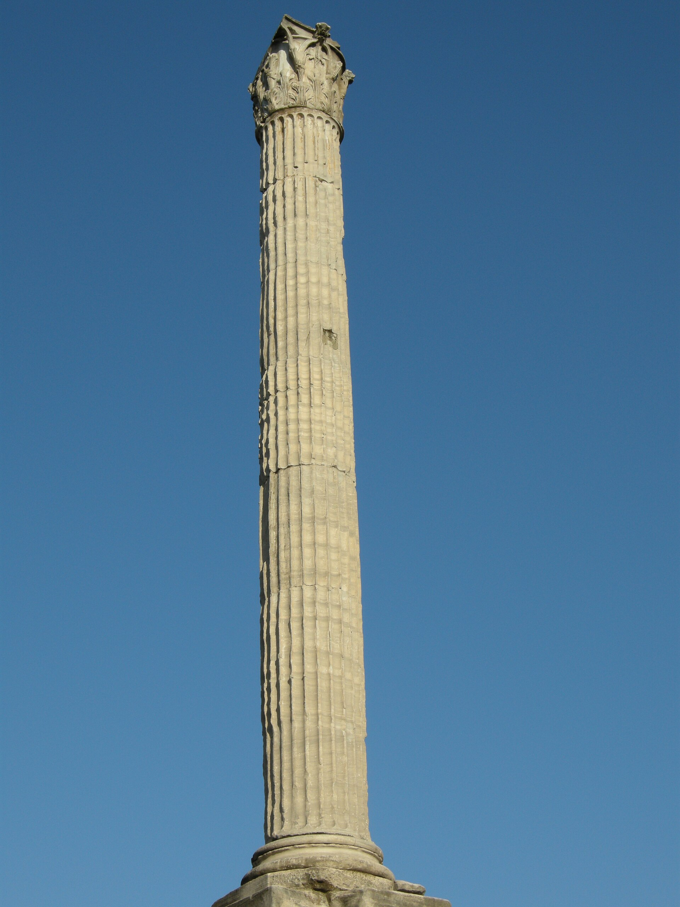
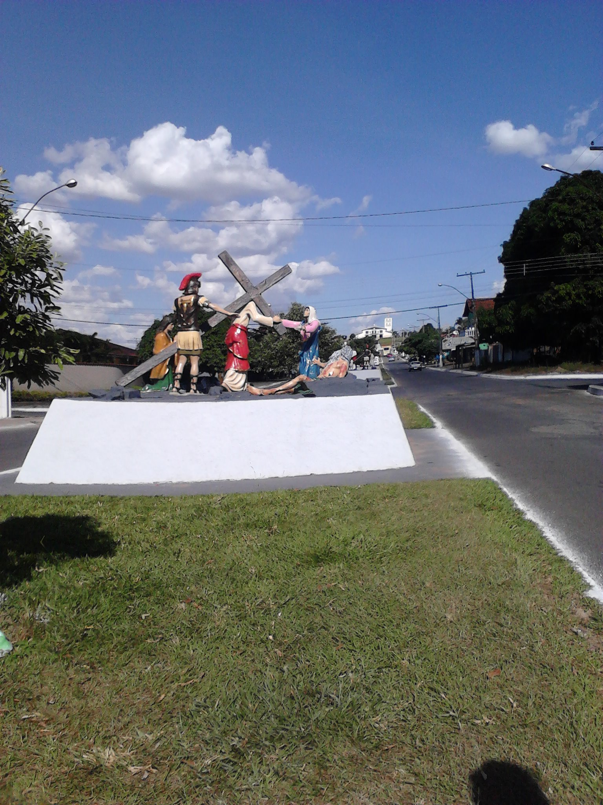

古罗马共和国与帝国早期的政治、宗教与商业中心：元老院在此议事，凯撒在此火葬， vesta 圣火在此长燃。今天只剩立柱与地基，但每一块残石都对应着改变西方历史的事件。
看点路线
Il Percorso
- 1从帕拉蒂尼山一侧的入口下行，先俯瞰全景再进废墟，方向感最好
- 2沿圣道 Via Sacra 自西向东走：这是凯旋式的经典路线
- 3终点提图斯凯旋门出，接斗兽场
主要遗迹
Le Rovine · 8 处对应历史事件的残石

塞维鲁凯旋门
纪念皇帝战胜帕提亚，浮雕层层叠叠几乎不留白——早期凯旋门（如提图斯门）的雅致被巴洛克式的拥挤取代，帝国晚期的美学焦虑可见一斑。中世纪时它半埋于土中，画面上半部反而因祸得福保存最好。

元老院议事厅
砖结构墙体基本完整——因为它后来被改成教堂才幸存。凯撒遇刺其实不在广场上这座元老院，而在旁边的庞培剧场；但在此驻足，想一想“共和国在此投票终结自己”并不夸张：公元前 27 年，屋大维就是在这片区域被授予“奥古斯都”之名的。

提图斯凯旋门
单拱、雅致、浮雕里罗马士兵抬着七枝烛台——这是耶路撒冷圣殿金器唯一的历史图像证据。公元 70 年圣殿被毁、犹太人开始大流散，这座门因此成为犹太民族史上最沉重的一块石头：直到今天，罗马犹太社区经过此门仍不入内穿行。

农神庙八柱
八根伊奥尼亚立柱是广场最上镜的剪影。这里曾是共和国的金库，也是每年 12 月农神节（Saturnalia）的起点——奴隶与主人互换角色、全民放假互赠礼物，罗马人的“圣诞节”雏形。

维斯塔贞女之家与圣火
六位贞女守护城邦圣火，火灭即国难。她们享殊荣（看角斗坐贵宾席、犯死罪者遇其可赦），代价惨烈：失贞者被活埋。庭院里那些无头女雕像，是帝国晚期贞女们的纪念碑。

凯撒火葬祭坛
广场北侧一小圈围起来的残基。凯撒在元老院遇刺后依遗嘱火葬于此，民众投掷衣物与家具助燃。两千五百年后的今天，祭坛上仍有人放上鲜花——“罗马最古老的追星现场”。

福卡圆柱
广场中心最后一座竖立的古建筑，纪念拜占庭皇帝福卡。它像一枚句号：竖起它的那一刻，古代史结束了，中世纪开始了。

圣道
穿广场而过的主路，凯旋式的必经之路：将军的战车碾过这些火山岩——路面凹槽里，传说还能找到被车轮磨出的辙印。走在这条路上，就是走在所有罗马凯旋式的“红毯”上。
历史故事
Le Storie
壹一座广场的生死
罗马广场最初其实是块洼地：沼泽、坟场。公元前 6 世纪伊特鲁里亚王族修了大排水道 Cloaca Maxima，把水排进台伯河，洼地才变成广场--罗马文明是从“抽干一块沼泽”开始的。
共和国时代这里是宇宙中心：演讲台上西塞罗发表反喀提林演说；凯撒的葬礼上，安东尼念出“朋友、罗马人、同胞们”；四周的巴西利卡（长方形大厅）是法庭与交易所，这种建筑形式后来被基督徒直接拿来当教堂平面。
帝国迁都与西罗马陷落后，广场被遗弃，一度沦为“奶牛场”（Campo Vaccino）与菜园。今天的空旷，是两百年考古发掘的成果。
贰提图斯门下的烛台
公元 70 年，提图斯攻破耶路撒冷，圣殿金器--包括巨大的七枝烛台 menorah--被抬进罗马。凯旋门内侧的浮雕，凝固了这支战利品游行的队伍。
这些金器后来存放在和平神庙，随帝国晚期的战乱不知所踪，浮雕成了它们唯一的“证件照”。对犹太民族而言，这幅图像既是流散的创伤纪念碑，也是复国的图腾：1948 年以色列国徽上的烛台，正是照着这座门上的浮雕画的。
罗马犹太社区至今保持一个不成文的传统：经过提图斯凯旋门不穿行入内。创伤的记忆，在石头上站了两千年。
叁西塞罗的演讲台
广场西北角的演讲台 Rostra，名字来自装饰它的船喙（rostrum）--海战胜利后拆下的敌舰撞角。在这里说话，脚下踩着的就是罗马的海权。
公元前 63 年，西塞罗在此连发四次演说揭发喀提林阴谋，句句成为拉丁语的范文；安东尼与屋大维的“后三头”清算名单，也在这里宣读--西塞罗的头与手被钉上了这个他曾无数次成功的讲台。
站在残存的台基旁想一想：西方政治里的“公共演说”传统，就是从这几平方米的石头上长出来的。
肆三月的雪与紫袍
公元前 44 年 3 月 15 日，凯撒在庞培剧场的元老院议事厅被 23 刀刺杀--注意，不在广场上这座 Curia，而在它旁边的建筑群。刺杀者布鲁图斯随后逃到卡比托利欧山，等待民众的掌声。
掌声没有来。马克·安东尼在广场上抓住凯撒的染血托加与遗嘱（给每个公民发钱），风向瞬间反转--愤怒的人群把凯撒的尸体抬到广场火葬，投掷家具助燃，随后烧了刺杀者的房子。
凯撒火葬祭坛至今有人献花，而共和国的葬礼也一起办了：十八个月后，屋大维带着军队回来，共和国就此退场。
伍圣火与贞女的赌注
广场东侧的圆形小庙，住着城邦的圣火与六位维斯塔贞女。火不灭则国不灭--每年 3 月 1 日新年重新点燃。
她们享有惊人特权：看角斗坐贵宾席、出行有仪仗、犯死罪者遇见可赦免。代价同样惊人：守火三十年，失贞者被活埋。
庭院里那些无头雕像，是帝国晚期的贞女纪念碑。一个用六个人的一生给一座城市“上保险”的制度，它的庄严与残忍属于同一个逻辑。
陆广场的地下工程
中世纪与文艺复兴的旅行者看到的罗马广场是土丘与奶牛场--他们不知道，脚下三米处藏着公元 7 世纪的下水道，再往下是凯撒时代的地层，一层一层直到王政时代。
Cloaca Maxima 大排水道至今仍在工作：两千六百年前伊特鲁里亚工程师挖的这条“城市静脉”，如今排的雨水照旧流进台伯河。
考古学家像剥洋葱一样剥开这里：每一层废墟下面还有一层废墟。罗马不是建在七座山上，是建在罗马自己身上。
柒卡比托利欧的鹅叫
公元前 390 年，高卢人夜袭卡比托利欧山。守军熟睡，是朱诺神庙的鹅最先被惊动--嘎嘎的叫声吵醒了守将曼利乌斯，罗马得救。
“鹅救了罗马”从此写进每个罗马孩子的课本。为纪念这场鹅叫，每年还有仪式性的“鹅车游行”--鹅坐着花车穿过广场，接受欢呼。
站在广场西侧抬头看卡比托利欧：那座现在安放着市政厅与米开朗基罗广场的山丘，曾经靠一群家禽守住了西方文明的火种。
捌帝国的“加建”
共和国的广场很快不够用了：凯撒、奥古斯都、和平庙、涅尔瓦、图拉真，历代皇帝在旧广场旁边“开分店”，最后连成一片帝国广场群。
图拉真广场与市场是压轴之作：巴西利卡乌尔皮亚曾是世界最大的法院大厅，图拉真纪念柱上 155 幅浮雕盘旋而上，讲两场达契亚战争--等于一根 30 米高的“战争新闻柱”。
今天的 Via dei Fori Imperiali 帝国广场大道就压在它们上面--墨索里尼为了阅兵修的这条路，本身也成了考古争议的一部分。读一块导览牌，就能读到三千年。
玖最后一根柱子的年代
广场中心那根不起眼的福卡圆柱（公元 608 年），纪念拜占庭皇帝福卡--罗马广场上最后竖立的纪念物。竖起它的时候，广场已经开始变成牧场。
选择给一位遥远的东罗马皇帝立柱，本身是那个时代的自白：罗马已不能自己保护自己，纪念的对象也只剩名义上的宗主。
这根柱子像一枚句号。古代史到它为止，之后的一千年，这片土地的名字从 Forum 变成了 Campo Vaccino--奶牛场。
拾从牛场到考古现场
18 世纪末的画家们来广场写生：断柱间是牛群、晾衣绳与粪堆。1795 年一位旅行者写道：“这里的一切都在缓慢地变成土壤。”
19 世纪的考古学家拿下了这块地：拿破仑时代的卡尼纳、统一后的博尼--他们搬走中世纪堆积的六米浮土，广场的骨架重新露出。20 世纪法西斯当局又拆掉了帝国广场大道上的教堂来“露出古典”。
你脚下的空旷，是两百年政治与学术共同决定的“应该看到什么”。广场本身，就是一件策展作品。
参观贴士
Consigli Pratici
- 从帕拉蒂尼山入口进、提图斯凯旋门出，再接斗兽场，是最顺的动线（联票三地通用）
- 地面碎砖多，务必穿包脚鞋
- 带一张复原图对照（游客中心有免费地图，或提前下载博物馆式 AR 应用）——残柱配复原图，废墟才“活”
- 黄昏时从卡比托利欧山（市政厅广场）后面的观景台俯瞰广场，是罗马最经典的黄昏机位之一
顺路同游
Da Non Perdere